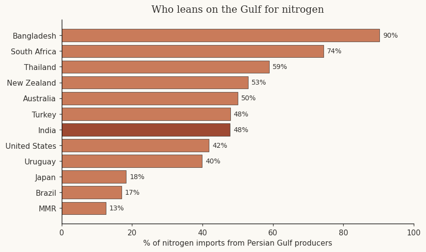
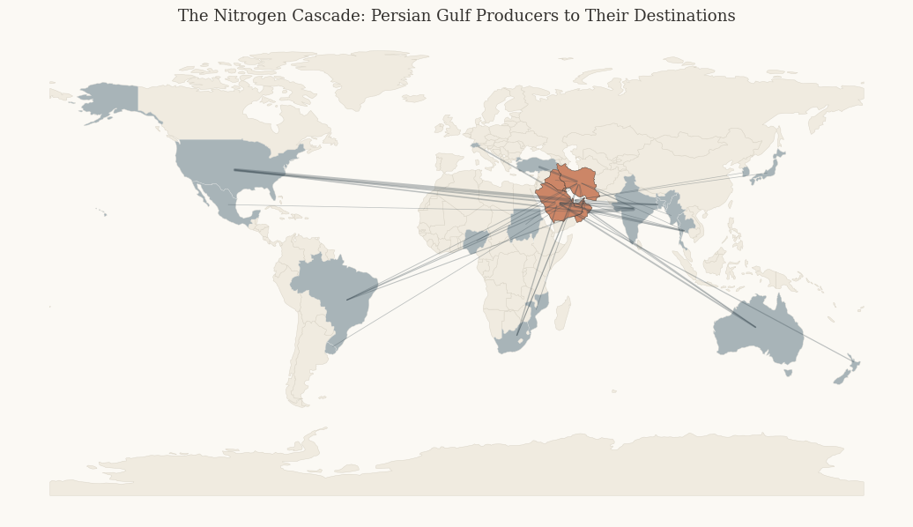
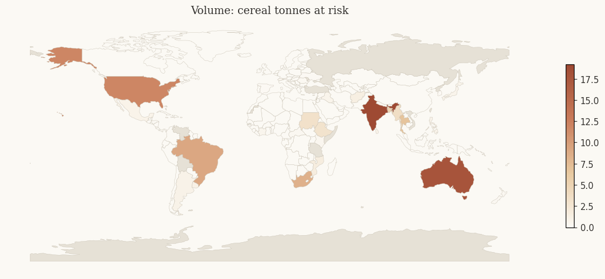
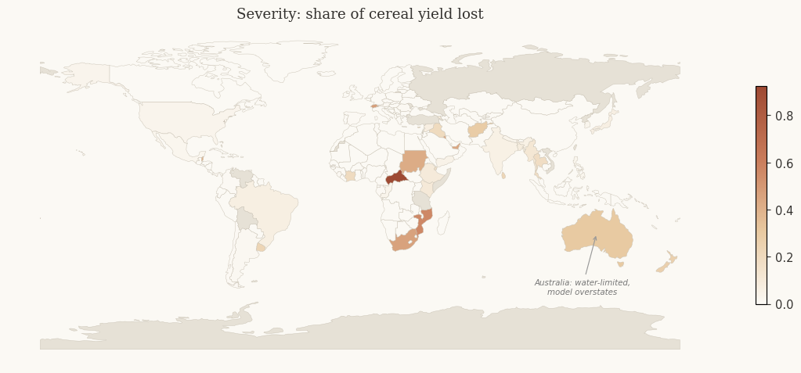
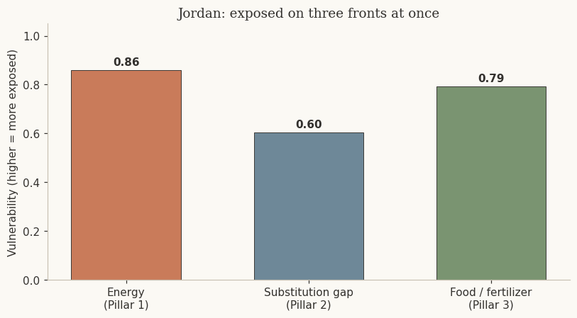
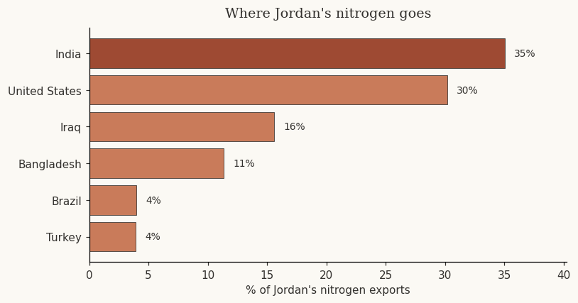

How a Strait of Hormuz closure reaches the world’s food.
This builds on our energy pillars. The scenario is the same: the Strait of Hormuz is closed. The question here is what that does to food — because the fertilizer that grows the world’s crops is made from Persian Gulf gas, and it leaves through the same strait as the oil.
Nitrogen fertilizer is built from natural gas — the gas literally becomes the fertilizer. The chain runs gas → ammonia → nitrogen fertilizer → crops → food. That is how an energy chokepoint becomes a food problem.
The Persian Gulf makes its fertilizer on site, from its own gas — so what a closure does is trap that fertilizer behind the strait, where it cannot reach the countries that depend on it. India’s problem is not that nitrogen cannot be made; it is that Gulf-made nitrogen cannot get out. It is a transit problem — the same logic as the oil and LNG, one step downstream.
This map uses bilateral nitrogen-trade flows from UN Comtrade, capturing how much of each country’s nitrogen comes from the Persian Gulf.

India is the headline at about 48%. Bangladesh, South Africa, and Thailand lean on Gulf nitrogen even more heavily. These are the supply lines a closure would cut.
Shading is Gulf-nitrogen dependence (darker = more dependent). The rings mark the countries with the least slack in their own food supply — where that dependence would hurt most.
The same trade data, drawn as routes. It shows how much of the world’s fertilizer starts in the Persian Gulf and flows out — to India, the Americas, Southeast Asia, and East Africa.

Gulf producers in terracotta; the countries they supply in navy. Line width is export volume.
If that nitrogen is trapped, who feels it — and how much? We trace the loss from trade to the field in four steps.
Reading the two maps together is the point. The biggest tonnage sits in large producers. The biggest damage per farmer falls on the poorest.

Cereal tonnes at risk. India tops it — roughly 19 million tonnes, on the order of a year’s cereal for ~96 million people. Large producers dominate the raw volume.

The same scenario as share of cereal yield lost. Low-fertilizer countries — Mozambique, Sudan, South Africa — lose a far larger share, because they had no excess to give up.
So who actually loses food?
The countries hit hardest are the poor ones that already farm with very little fertilizer. A wealthy farm uses more nitrogen than its crops really need, so losing some barely dents the harvest. A poor farm uses so little that every kilogram is doing real work — the same cut takes a far bigger bite. The people with the least to spare lose the most.
The countries that are both heavily Gulf-dependent and already food-insecure — India, Afghanistan, Mozambique, South Africa, Sudan, Ethiopia, Kenya, Iraq — are the ones that cannot simply buy their way through. That combined picture is what the map below shows. It is the central finding of this pillar.
Dark red = heavy Gulf dependence and existing food insecurity. Wealthy importers exposed to the shock (Japan, Australia) appear separately — they face a price spike, not hunger.
This is how Jordan scored across all three pillars — energy, substitution, and food.

Higher means more exposed. Jordan is near the top on all three: ~100% Gulf crude, little ability to reroute, and almost total dependence on imported nitrogen and cereals.
Jordan is unusual. It imports almost all its nitrogen and re-exports most of it — about a third goes to India. So it is not just an importer; it is a transmission node in the regional food system.

Jordan’s nitrogen exports by destination: about a third to India, with more to the US, Iraq, and Bangladesh.
In a prolonged closure Jordan faces a real choice: keep earning from the nitrogen it exports, or keep that fertilizer for its own food. Either way it is squeezed — losing revenue or losing food — in a country bordering the war. And if Jordan holds its nitrogen back, India, its largest customer, feels it next.
Built on the same data and method as the energy pillars: bilateral trade flows, normalized scores, and a materiality gate so small players don’t distort the picture.
Sources: UN Comtrade · FAOSTAT (Fertilizers by Nutrient, Crop Production, Food Security Indicators) · World Bank Pink Sheet · Ludemann et al., Nature Food 2021 · Natural Earth.
Limitations: the impact layer is an illustrative scenario, not a forecast; the Oman framing carries India’s headline (48% vs 17%); producer gas-dependence is proxied by nutrient type; the model assumes nitrogen is the binding yield constraint.
AI disclosure: Claude (Anthropic) was used for brainstorming, drafting, code debugging, and writing review. All outputs were reviewed and verified by the author.